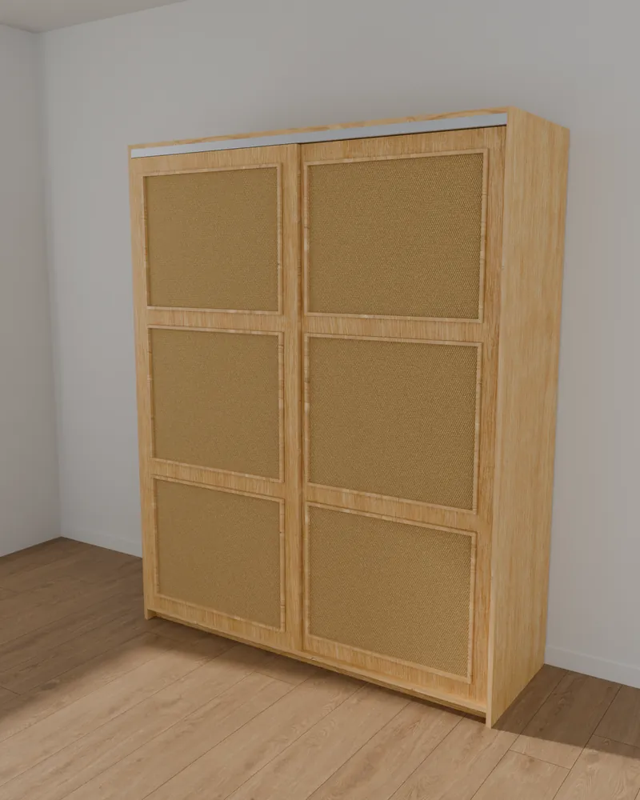
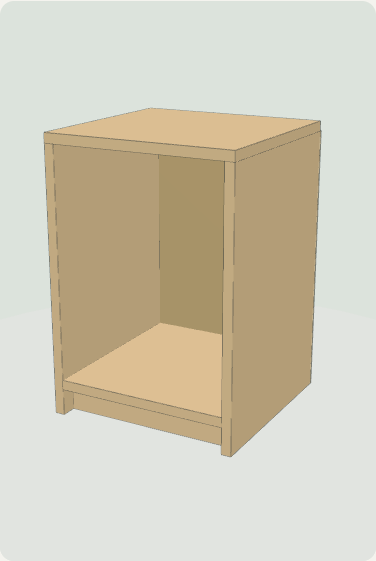
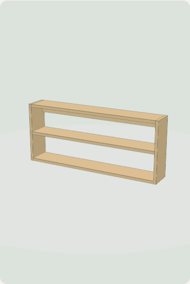
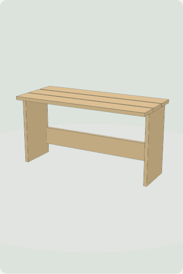

Muebles y diseños a medida
Muebles a medida, dibujados antes de cortar.
Bonitos, de madera real y a buen precio. Cada proyecto trae su plano, presupuesto, lista de corte y un armado paso a paso con láminas claras.
Proyectos
Proyecto 01 · Ropero

Recámara
Ver proyecto
Ropero Pino & Yute
160 × 200 × 55.2 cm · 2 puertas corredizas · linaza y cera de abeja
41piezas
16pasos
1:1plantillas
Materiales
—
Muebles de sobrante
Salen de las mismas hojas del ropero, sin hojas ni cortes extra.

Recámara
Buró Pino & Yute
36 × 51.8 × 35.5 cm · pino y cera de abeja
7piezas
6pasos
$90extra
Proyecto 02Ver proyecto

Recámara · Pared
Repisa de pared
93.6 × 40 × 15 cm · pino y cera de abeja
6piezas
6pasos
$112extra
Proyecto 03Ver proyecto

Entrada · Recámara
Banca zapatera
76 × 39.8 × 33.1 cm · pino y cera de abeja
6piezas
5pasos
$137extra
Proyecto 04Ver proyecto
Proceso
Del dibujo al mueble terminado
1
Diseño a medida
Medidas de tu espacio y de lo que vas a guardar.
2
Presupuesto claro
Partida por partida, comparado con comprarlo hecho.
3
Cortes y plantillas
Piezas numeradas, lista para WhatsApp y plantillas de perforación 1:1.
4
Armado en 3D y láminas
Cada paso con piezas, tornillos, broca y herramienta.